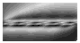
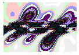
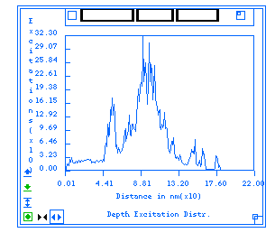
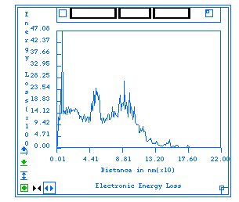
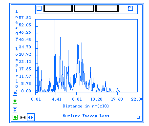
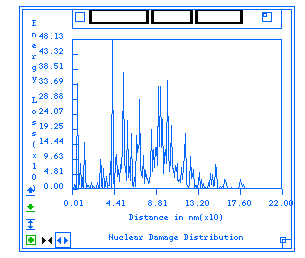
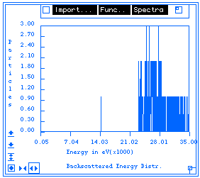
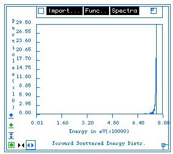

Diffractometer:Menus;
The Diffractometer section of Desktop Microscopist is limited in its capabilities.
There are no methods for extracting information from an experimental plot
and no methods for importing experimental information.
Diffractometer:Define Menu;
Diffractometer:Define Menu:Define;:
Brings up the Diffractometer
Setup or Definition Dialog Box.
Diffractometer:Define Menu:Recalculate;:
Will recalculate the Diffractometer plot using the defined settings.
Diffractometer:Info Menu
Diffractometer:Info Menu:Labels;:
Clicking on a line will cause a label to be displayed at the intensity peak.
Desktop Microscopist calculates the intensity of a peak based on the number
of planes which diffract into a given 2q. However, if planes of different
type diffract into the same 2q, Desktop Microscopist stores the additional
plane. For example: the (122) planes and the (003) planes for a primitive
cubic crystal diffract at the same 2-theta. Desktop Microscopist stores
3 values: one for the (122) planes, one for the (003) planes and one for
the summed intensity value.
Diffractometer:Info Menu:Info:
Clicking and holding on a line will bring up the Info pop-up display in
the upper left hand corner of the current menu.
Diffractometer:Info Menu:Text Table - Calculated:
Selecting this menu item brings up a text table object with a numerical
list of the calculated diffraction spots.
Diffractometer:Info Menu:Re-size Graph:
Use this function to automatically fit the complete diffractometer plot
inside the current window. This option is used when the window size is for
viewing purposes.
Diffractometer:Info Menu:Zoom;:
This option will plot half the current angular range inside the current
graph box. It expands the plot around the current mouse position. Double
clicking will restore the plot to its full range.
Diffractometer:Info Menu:Search/Match;:
This menu activates exactly the same functions as the SAD Search
Menu . The only difference is that when selecting found crystals, the
d-space information is displayed as a diffractometer plot instead of a ring
pattern.
Laue Transmission Menus:
See the SAD & CBED section. These objects
have exactly the same options.
Laue Back Reflections Menus:
See the SAD & CBED section. These objects
have exactly the same options.
Debye-Scherrer Patterns:
See the Debye-Scherrer - Ring Pattern section.
These two objects have exactly the same options.
Phase Diagram:Menu;
Phase Diagram:Menu:Re-size;:
Fits the Phase Diagram to the current window size. Use this option to restore
the window after re-sizing.
Linear by Wt.% (Linear by At. %):
Toggles the x axis of the Phase Diagram between linear by weight percentage
and linear by atomic percentage.
Phase Diagram:Menu:Hide Text;:
This option hides all the text which clutters up the phase diagram. Specifically,
it will eliminate any phase labels and transition temperature indications.
It does not effect x-y axis and plot title text.
Digitize Image Menus;:.i.Digitize Image:Menus;
Image Menu;:.i.Digitize Image:Image Menu;
- Digitize Image:Image Menu:Capture Image:. -K:
Starts/stops the capture of a video image using a CCD camera and a Quick
Capture or compatible video capture board.
- Digitize Image:Image Menu:Configure Video...:
1. Brings up the Configure
Video Dialog Box which allows the user to select the appropriate channel
for accessing the digital image. Use this dialog box when an image cannot
be seen.
- Digitize Image:Image Menu:Bi-level Transform...:
1. This menu item activates the Bi-Level
Transform Dialog Box. This dialog box allows the user to set the threshold
values for the creation of a binary image.
- Digitize Image:Image Menu:Palettes:
This menu item brings up a hierarchical menu which allows selection of a
standard LUT (Look Up Table). Desktop Microscopist supports the following
palettes: Normal Gray, High contrast grey, low contrast grey, false color,
false color banded, and false color dithered.
Space Group:Menus:
When accessing the on line International Tables of Crystallography or defining
crystals using Wyckoff positions, the space group to be used may be found
under the Space Group menu(s). The menus are divided by crystal family and
the menus available are:
Space Group:Menus:Cubic
Space Group:Menus:Tetragonal
Space Group:Menus:Orthorhombic
Space Group:Menus:Trigonal
Space Group:Menus:Rhomb. Set
Space Group:Menus:Hexagonal
Space Group:Menus:Monoclinic
Space Group:Menus:Triclinic
When defining a crystal, only the space group menu corresponding to the
selected crystal family is displayed.
One Dislocation. Definition Menu:
One Dislocation. Definition Menu:Define Beam..:
This brings up a dialog
box that sets the beam orientation, the g-vector and the anomalous absorption
coefficient. Also, allows the setting of multiple orientations for macro
calculations.
One Dislocation: Definition Menu:Define Foil..:
This brings up the foil
definition dialog box.
One Dislocation: Definition Menu:Calculate Image:
One Dislocation: Definition Menu:Redraw:
One Dislocation: Add Defects Menu:
One Dislocation: Add Defects Menu:Dislocations
Brings up the One Dislocation
Definition Dialog Box. when in the One Dislocation Object. It brings
up the Two Dislocation
Defintion Dialog Box when in the Two Dislocation Object.
One Dislocation: Palette Menu:
One Dislocation: Palette Menu:Normal Grey
One Dislocation: Palette Menu:High Contrast Grey

One Dislocation: Palette Menu:Low Contrast Grey

One Dislocation: Palette Menu:False Color
One Dislocation: Palette Menu:False Color Banded

One Dislocation: Palette Menu:False Color Dithered
Monte Carlo: Definition Menu:
Monte Carlo: Definition Menu:Define:
Brings up the Monte Carlo
Setup Dialog Box.
Monte Carlo: Definition Menu:Recalculate:
The following Menu Items all generate the described plots.
Monte Carlo: Definition Menu:Projected Range:
This plot gives the number of particles which they reached the cutoff
energy.at a given depth.
Monte Carlo: Definition Menu:Path Length:
This plot gives the number of particles which reached a given path length.
Monte Carlo: Definition Menu:Depth Excitation Distribution:
This plot gives the number of excitations at a given depth.

Monte Carlo: Definition Menu:Electronic Energy Loss:
This plot gives the energy lost to electron shell excitations at a given
depth due to the previous excitations
.
Monte Carlo: Definition Menu:Nucelar Energy Distribution:
This plot gives the energy lost to nucleus interations at a given depth
due to the previous excitations

Monte Carlo: Definition Menu:Total Energy Distribution:
Just the sum of the two previous plots.
Monte Carlo: Definition Menu:Nucelar Damage Distribution:
Should give an indication of the distribution of atoms which have been displaced
from the lattice.

The Following menu items are exactly analogous to the previous only the
distribution is with respect to the plane perpendicular to the surface normal.
Monte Carlo: Definition Menu:Radial Excitation Distribution:
Monte Carlo: Definition Menu:Radial Electron Energy Distribution:
Monte Carlo: Definition Menu:Radial Nuclear Energy Loss:
Monte Carlo: Definition Menu:Radial Total Energy Loss Distribution:
Monte Carlo: Definition Menu:Radial Nuclear Damage Distribution:
Monte Carlo: Definition Menu:Backscattered Energy Distribution:
Gives the number of backscattered particles for a particular energy. (Does
not give any secondarily excited particles.)

Monte Carlo: Definition Menu:Forward Scattered Energy Distribution:
Gives the number of forward scattere particles that escaped at each energy.

Author:James T. Stanley J.
Stanley
 Desktop
Manual
Desktop
Manual
Distributed By: Virtual
Labs
Last Updated:1/12/96 Sat, Apr 27, 1996